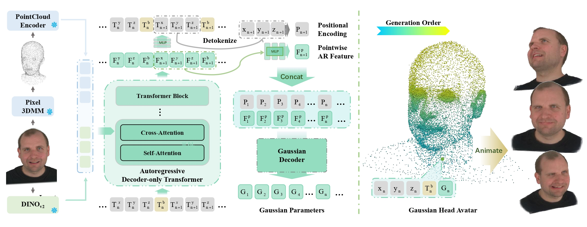

An autoregressive framework for generating dynamic 4D Gaussian avatars from a single portrait image.
1HKUST 2Ant Group 3City University of Hong Kong
AvatarPointillist generates dynamic 4D Gaussian avatars from a single portrait image. The method adopts a decoder-only autoregressive Transformer to generate Gaussian point clouds, jointly predicts per-point binding for animation, and refines renderable attributes with a dedicated Gaussian decoder.
We introduce AvatarPointillist, a novel framework for generating dynamic 4D Gaussian avatars from a single portrait image. At the core of our method is a decoder-only Transformer that autoregressively generates a point cloud for 3D Gaussian Splatting. This sequential design enables precise and adaptive construction by adjusting point density and total point count based on subject complexity. During generation, the autoregressive model jointly predicts per-point binding information for realistic animation. A dedicated Gaussian decoder then converts the generated points into complete, renderable Gaussian attributes. Conditioning the decoder on latent features from the autoregressive generator substantially improves fidelity, leading to high-quality, photorealistic, and controllable avatars.
Our gallery showcases representative animation results produced by AvatarPointillist. In each video, the left side is the input, the middle is the output, and the right side shows the target expression and camera.
The framework consists of two components: an autoregressive model for Gaussian geometry generation and a Gaussian decoder for rendering attributes. The autoregressive model takes image features from DINOv2 together with point-cloud features, predicts quantized tokens for coordinates and binding, and enables animation through the predicted binding information and linear blend skinning.

Each page presents one qualitative comparison clip extracted from the consolidated comparison video. Use the arrows or the dots to browse the three comparison segments.
@inproceedings{liu2026avatarpointillist,
title = {AvatarPointillist: Autoregressive 4D Gaussian Avatarization},
author = {Hongyu Liu and Xuan Wang and Yating Wang and Zijian Wu and Ziyu Wan and Yue Ma and Runtao Liu and Boyao Zhou and Yujun Shen and Qifeng Chen},
booktitle = {Proceedings of the IEEE/CVF Conference on Computer Vision and Pattern Recognition},
year = {2026}
}Please update the citation key or venue name here if the final public bibliographic entry differs from the current version.